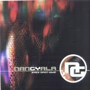

| Artist: | Nangyala |
| Title: | Eyes Open Wide |
| Label: | Nangyala demo cd |
| Length(s): | 20 minutes |
| Year(s) of release: | 2000 |
| Month of review: | [03/2001] |
| 2) | Feelincognito | 5.27 |
| 4) | Paragon (single Edit) | 4.09 |
Feelincognito opens moodily with soft piano. A slightly bluesy feel in the guitar playing here, but the slurry vocals dominate the song with the strong vocal melody. A forceful ballad, quite emotive, with the bite in the tail, but returning to the opening sequence. The music does seem a bit more straightforward than it used to, I mean compared to their previous two tracks Born Gifted and Paragon.
The title track has clear acoustic guitar. A rather depressed sounding track, and also the strongest track so far. The vocals sound quite intimate on this one. Then the song seems to go into Floydian regions with the guitar singing out, but the band changes its mind, and how well they do. The song takes on a different character altogether with "industrialized" vocals and lyrical keyboards interplaying with the guitars. A strong drive here. The key solo in the middle is reminiscent of Mark Kelly. We get some stereo effects on the guitar (ear to ear), and the band really lets it rip. Nice song to build out during a live concert.
Paragon we already know from the previous demo disc. This is an edited version and the song is still a very good one with a strong vocal melody, cosmic keyboards and not forgetting the strong melodic guitar work. The band alternates the cosmic vocal parts with heavy passages.
Jurriaan Hage